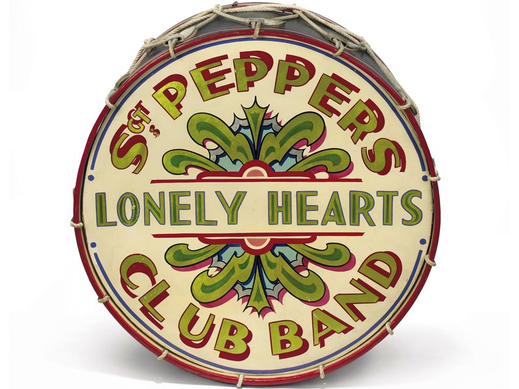
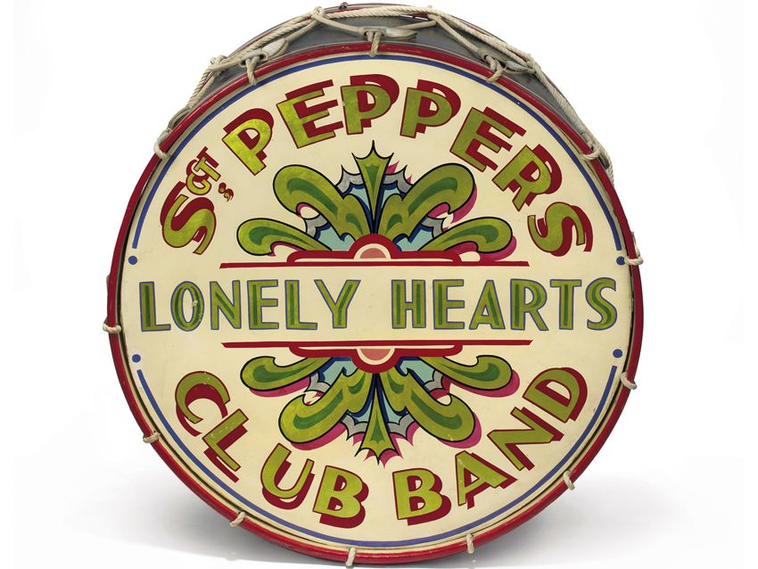

My Opinion
Personally I don't believe this theory at all. It seems too far-fetched for such a famous man like Paul McCartney to die and be seamlessly replaced. Most of the clues are a bit stretched too; a lot of them could just be coincedences. Some clues are just so outlandish they have to made up. Although I think it'd be crazy if this entire theory were true, I really don't believe that it is.
Here is Paul McCartney himself briefly discussing and denying this conspiracy theory:
 
